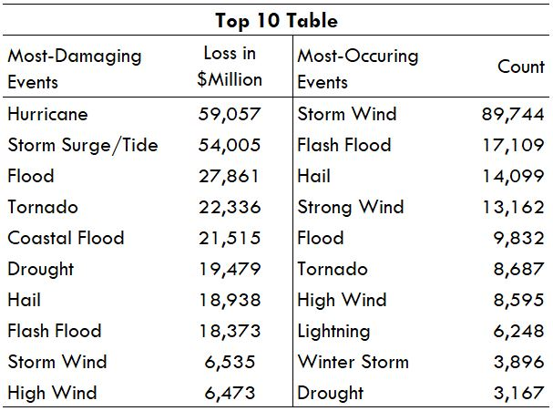

This interactive map presents aggregated data of U.S. weather disasters at the state level for 2005-16 years. The underlying data is from NOAA's Storm Event Database. Only 13 unique disasters (events) are presented, based on the top-10 most damaging and most occuring events as tabulated below.
